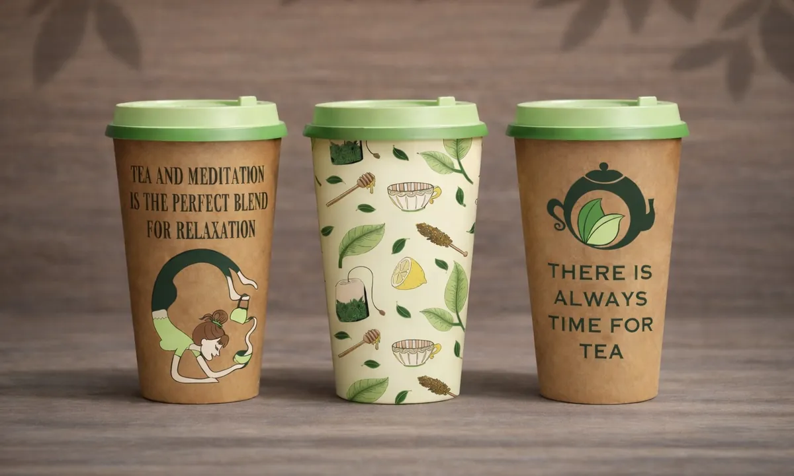
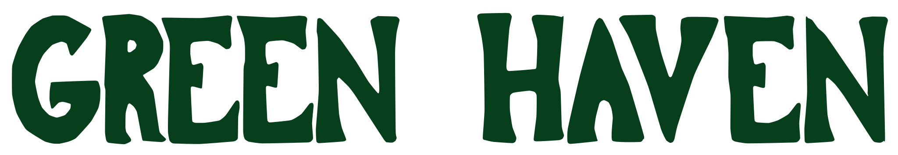
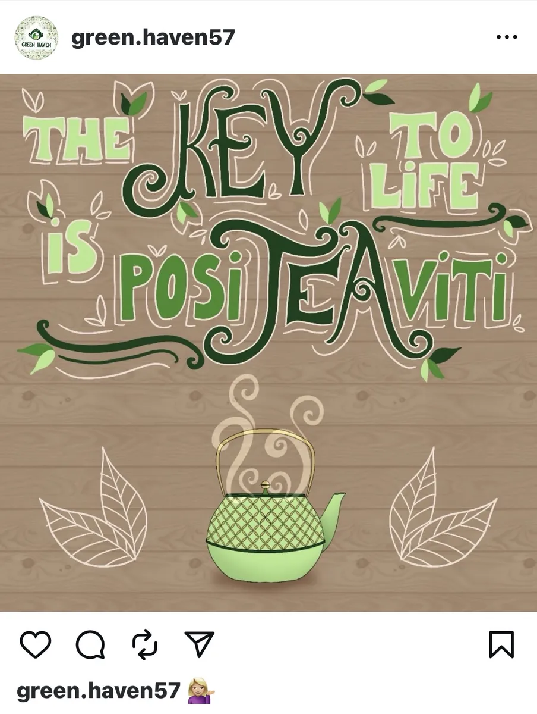
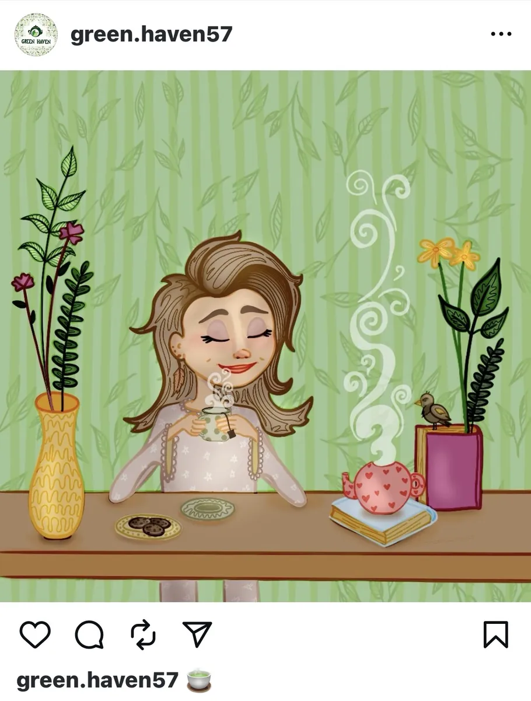
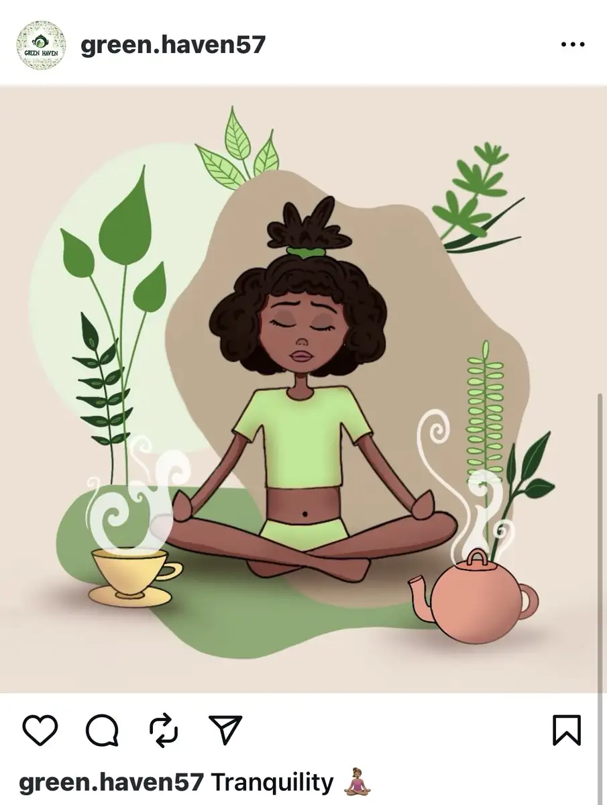

The brief
Build a soft, friendly identity that matches the feeling of a tea ritual rather than a health product. It had to hold together across packaging, print and a social feed, so every piece is drawn from the same small set of parts.
Brand design · Logo · Packaging · Illustration
A conceptual eco-wellness tea brand inspired by calmness and natural living.

Build a soft, friendly identity that matches the feeling of a tea ritual rather than a health product. It had to hold together across packaging, print and a social feed, so every piece is drawn from the same small set of parts.
A teapot reduced to one flowing shape, with the leaves held inside it rather than beside it, so the mark reads as a single form at any size. The lettering is hand-drawn rather than typeset, which keeps the brand welcoming and a little imperfect instead of corporate.

Hand-drawn in Procreate and built as a seamless tile: the artwork meets itself on all four edges, so it repeats in any direction with no visible join. One file that holds at any scale, on a tea box, on wrapping paper or printed to fabric.
Drawn in Illustrator and Procreate, in the same calm voice as the packaging, so the feed and the product look like one brand.



A short loop for the feed. The same character and the same line weight as the illustrations, so the brand still looks like itself when it moves.